전파전자기능사(구) (2003-10-05 기출문제)
1과목: 임의 구분
1. 변조도 40[%]의 진폭 변조파를 자승 검파했을때 나타나는 신호파 출력의 왜율[%]은?
- 1[%]
- 4[%]
- 10[%]
- 40[%]
(정답률: 알수없음)

2. 공전의 영향을 가장 크게 받는 전파는?
- LF
- HF
- VHF
- SHF
(정답률: 알수없음)
3. 자기폭풍(자기람)을 받았을때 일반적으로 전리층에 나타나는 현상으로 옳은 것은?
- F2층의 임계 주파수가 내려간다.
- D층의 전자밀도가 매우 증가한다.
- E층의 전자밀도가 매우 증가한다.
- 전리층에 영향은 없다.
(정답률: 알수없음)
4. 근거리 페이딩은 지상 몇 ㎞ 부근에서 발생하는가?
- 50 ㎞
- 100 ㎞
- 150 ㎞
- 300 ㎞
(정답률: 알수없음)
5. 공중선의 접지에 있어서 지면 또는 지상 수미터인 곳에 수개의 도선을 쳐서 대지와의 사이에 되도록 많은 용량을 갖도록 하는 접지방식을 무엇이라고 하는가?
- 심굴 접지
- 카운터 포이즈
- 방사상 접지
- 다중 접지
(정답률: 알수없음)
6. 주파수 7.5[㎒]를 고유 주파수로 하는 반파 다이폴 안테나의 길이는? (단, 단축률은 무시한다.)
- 40[m]
- 10[m]
- 20[m]
- 400[m]
(정답률: 알수없음)
7. 그림은 오실로스코프 형광면상에 나타난 파형이다. VOLTS/CM의 설정치를 0.5로 하고 TIME/CM(배율)을 10으로 했을 경우 교류전압(peak to peak)은 얼마인가?
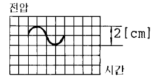
- 1[V]
- 5[V]
- 10[V]
- 20[V]
(정답률: 알수없음)
8. 급전선의 전압 정재파비(VSWR)를 측정하는데 적당하지 않은 것은?
- 급전선에서 전압의 최대치, 최소치를 구한다.
- 급전선에서 전류의 최대치, 최소치를 구한다.
- 전압계나 전류계를 이용한다.
- 급전선의 직류저항을 구한다.
(정답률: 알수없음)
9. FM 송신기에 관한 측정과 관계가 적은 것은?
- 왜율의 측정
- 잡음측정
- 프리엠파시스 특성측정
- 진폭 제한기 특성측정
(정답률: 알수없음)
10. 얼마나 미약한 전파까지 수신할수 있는 능력은 무엇을 측정하면 되는가?
- 충실도
- 안정도
- 감도
- 선택도
(정답률: 알수없음)
11. FM 송신기에서 변조 주파수의 높은 주파수 영역에 강세를 주기위한 회로는?
- De - emphasis
- pre - emphasis
- AFC
- pre - distorter
(정답률: 알수없음)
12. 통신 위성을 중계기로하여 통신을 수행할 때 지구상에 있는 통신국을 나타낸 것은?
- 우주국
- 발신국
- 지구국
- 위성국
(정답률: 알수없음)
13. 다음 중 무선 송신기의 일반적 구성 요소가 아닌 것은?
- 발진부
- 증폭부
- 검파부
- 전원부
(정답률: 알수없음)
14. 접지 수직 안테나의 높이가 h 일 때 안테나의 실효높이는?
- 2πh
- 2h/π
- 2π/h
- π/h
(정답률: 알수없음)
15. 무선 전화수신기의 충실도와 관계가 먼 것은?
- 주파수 특성
- 변조도
- 진폭 일그러짐
- 위상 일그러짐
(정답률: 알수없음)
16. AM에서 반송파 1[MHz]이며 변조신호가 5[KHz]의 주파수로 변조를 행할때 점유주파수 대역폭은?
- 5[KHz]
- 10[KHz]
- 15[KHz]
- 20[KHz]
(정답률: 알수없음)
17. 주파수 대역폭이 가장 좁은 방식은?
- AM
- FM
- SSB전화
- FS전신
(정답률: 알수없음)
18. 정지 궤도 위성통신의 장점이 아닌 것은?
- 서비스지역이 넓다.
- 광대역 통신이 가능하다.
- 통신망 구축이 용이하다.
- 통신보안 장치가 필요하다.
(정답률: 알수없음)
19. FM 수신기에서 AFC회로가 사용되는 이유는?
- 상호변조가 발생되는 것을 방지하기 위해
- 수신감도를 조정하기 위해
- 높은 주파수 신호의 진폭을 감소하기 위해
- 국부발진기의 주파수를 자동적으로 제어하기 위해
(정답률: 알수없음)
20. 다음 중 위성의 궤도에 따른 분류가 아닌 것은?
- 저궤도(LEO)
- 중궤도(MEO)
- 고궤도(GEO)
- 중고궤도(HEO)
(정답률: 알수없음)
2과목: 임의 구분
21. 다음 문장의 영역으로 가장 적합한 것은?
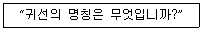
- What is the strength of signals?
- What is the name of your vessel?
- What is the intelligibility of signals?
- What is the position of station?
(정답률: 알수없음)
22. 송신할 문자의 발음시 사용단어가 틀린 것은?
- A : ALFA
- C : CHARLIE
- K : KEEPER
- L : LIMA
(정답률: 알수없음)
23. 다음 문장의 ( )안에 가장 적절한 것은?
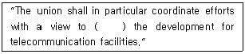
- harmonizing
- beginning
- transmitting
- receiving
(정답률: 알수없음)
24. 다음 문장을 가장 적합하게 국역한 것은?
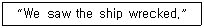
- 우리는 그 배가 회전하는 것을 보았다.
- 우리는 그 배가 난파된 것을 보았다.
- 우리는 그 배가 돌아오는 것을 보았다.
- 우리는 그 배가 전진하는 것을 보았다.
(정답률: 알수없음)
25. 다음 문장의 밑줄친 부분을 잘못 영역한 것은?
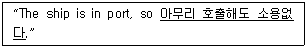
- it is no use to call.
- there is no use in calling.
- it is no use calling.
- there is no use to be called.
(정답률: 알수없음)
26. 다음 중 용어의 번역이 틀린 것은?
- paid service advice : 유료 사무보
- multiple telegram : 동문 전보
- test station : 실험국
- frequency tolerance : 주파수 허용 편차
(정답률: 알수없음)
27. 다음 문장을 가장 적당하게 국역한 것은?
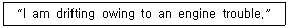
- 본선은 기관고장으로 예인중이다.
- 본선은 기관고장으로 수리중이다.
- 본선은 기관고장으로 표류중이다.
- 본선은 기관고장으로 대기상태다.
(정답률: 알수없음)
28. 다음 문장의 밑줄친 부분의 가장 적합한 표현은?
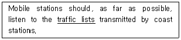
- 주파수표
- 통신표
- 선박국 국명록
- 호출표
(정답률: 알수없음)
29. 다음 용어 중 그 뜻이 틀리는 것은?
- Administration - 주관청
- Harmful Interference - 전파장애
- Public Correspondence - 공중통신
- Ordinary Telegram - 사보
(정답률: 알수없음)
30. 다음 영문의 가장 적합한 해석은?
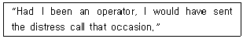
- 내가 통신사가 되었을 때 그 경우에 조난신호를 보낼 것이다.
- 내가 통신사였기 때문에 그 경우에 나는 조난신호를 보낼수 있었다.
- 만일 내가 통신사였더라면 그 경우에 조난신호를 보냈을 텐데.
- 내가 만일 통신사라면 그 경우에 조난신호를 보낼텐데.
(정답률: 알수없음)
31. 다음 중 ( )안에 가장 적당한 것은?
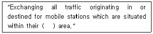
- shell
- audience
- service
- tone
(정답률: 알수없음)
32. 무선전화용 숫자 통화표로 잘못 표현한 것은?
- 0 : NADAZERO
- 1 : UNAONE
- 9 : NINONINE
- 6 : SOXISIX
(정답률: 알수없음)
33. 다음 문장의 ( )에 가장 적합한 것은?
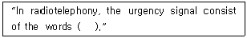
- PAN PAN
- MAYDAY
- SOS SOS
- XXX XXX
(정답률: 알수없음)
34. 다음 문장의 ( )에 가장 적합한 것은?
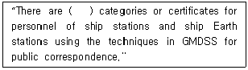
- two
- three
- four
- five
(정답률: 알수없음)
35. 발신국을 영문으로 표기하면?
- office of origin
- office of destination
- office of terminal
- office of relay
(정답률: 알수없음)
36. 다음 무선 전화 통화의 절차 용어는?
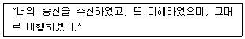
- WILCO
- INTERCO
- VERIFY
- BREAK
(정답률: 알수없음)
37. 다음 문장의 밑줄친 부분을 옳게 국역한 것은?
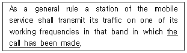
- 그 호출을 하려면
- 그 호출이 행하여지고 있는
- 그 호출을 하려고 하여진
- 그 호출을 받은
(정답률: 알수없음)
38. 다음 문장이 나타내는 주파수는?
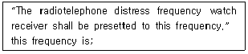
- 500 kHz
- 2182 kHz
- 8364 kHz
- 156.8 kHz
(정답률: 알수없음)
39. 다음중 용어의 의미가 바르지 않은 것은?
- Coast station - 해안국
- Coast earth station - 해안지구국
- Ship station - 선박국
- Ship earth station - 이동지구국
(정답률: 알수없음)
40. 다음 문장에서 ( )안에 적합한 내용을 고르시오.
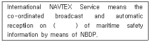
- 500KHz
- 2182KHz
- 518KHz
- 2187.5KHz
(정답률: 알수없음)
3과목: 임의 구분
41. 암호자재를 가장 안전하게 수발하는 방법은?
- 인감 등록자에게 직접 수발하는 것
- 등기우편으로 수발하는 것
- 문서수발계통으로 수발하는 것
- 비밀취급자에게 직접 수발하는 것
(정답률: 알수없음)
42. 비상위치지시용 무선표지국에서 송신하는 통보는 어떤 통신으로 판단하는가?
- 보안통신
- 조난통신
- 의료통신
- 안전통신
(정답률: 알수없음)
43. 해상이동업무에 있어서의 통신의 우선순위중 가장 높은 것은?
- 기상관측통보
- 무선측위에 관한 통신
- 안전 통신
- 조난 통신
(정답률: 알수없음)
44. 송신보안에 해당하는 것은?
- 적의 도청 또는 교신분석에 대하여 보안을 유지하는 것.
- 통신소에 경비원을 배치하는 것.
- 암호나 음어가 누설되지 않도록 보안을 유지하는 것.
- 비 인가자의 암호자재 취급을 제한하는 것.
(정답률: 알수없음)
45. 통신보안 목적 달성을 위해 행하는 일이 아닌 것은?
- 통신의 원활한 소통
- 누설가능성의 사전제거
- 정보량의 제한
- 획득하려는 정보의 지연
(정답률: 알수없음)
46. 통신 보안과 관계 깊은 것은?
- 통신 보안은 음성적이다.
- 통신 보안은 수집기능이다.
- 효과 측정이 용이하다.
- 국가 보안에 중대한 영향을 미친다.
(정답률: 알수없음)
47. 통신보안상으로 분석해볼때 비밀이나 중요내용이 통신에 의하여 누설되는 주요 요인에 해당되지 않는 것은?
- 취약성 있는 통신망 이용
- 과다한 통신소통
- 보고체제의 일원화
- 무선침묵 위반
(정답률: 알수없음)
48. 국제 네비텍스(NAVTEX) 수신기의 사용 주파수는?
- F1B 500kHz
- F1B 518kHz
- F1B 2,187.5kHz
- F1B 156.525MHz
(정답률: 알수없음)
49. 다음 중 전파법의 궁극적인 목적은?
- 전파의 효율적인 이용
- 전파통신산업의 발전
- 공공복리의 증진
- 국민경제의 발전에 이바지
(정답률: 알수없음)
50. 다음 중 정보통신부장관의 권한을 중앙전파관리소장에게 위임한 것은?
- 전파연구
- 혼신조사 및 조치
- 형식검정 또는 형식등록
- 무선국의 개설허가 취소
(정답률: 알수없음)
51. 다음 중 VHF 주파수대는 어느 주파수범위를 말하는가?
- 3MHz초과 30MHz이하
- 30MHz초과 300MHz이하
- 300MHz초과 3000MHz이하
- 3GHz초과 30GHz이하
(정답률: 알수없음)
52. 조난통신 등에 관한 규정과 다르게 설명된 것은?
- 조난호출은 선장의 명령으로 특정한 무선국에 행할 수 있다.
- 무선전화로 조난통신을 중계할 때에는 "MAYDAY RELAY"의 어를 사용한다.
- 조난통신의 관장은 조난통보를 발신한 무선국 또는 그 무선국으로부터 조난통신의 관장을 의뢰받은 무선국이 행한다.
- 조난통보는 응답이 있을 때가지 필요한 간격을 두고 반복하여 송신하여야 한다.
(정답률: 알수없음)
53. 무선국 운용의 예외적 운용으로서 다음 중 선박이 항행 중에 있어야만 통신을 할 수 있는 것이 아닌 것은?
- 의료통보
- 위치통보
- 기상의 조회
- 기기의 시험
(정답률: 알수없음)
54. 다음 중 경보신호를 발하여 통신할 수 있는 경우가 아닌 것은?
- 조난호출 또는 조난통보
- 안전신호 전치후 행하는 긴급 폭풍경보
- 승객 또는 승무원이 선외로 떨어져 다른 선박에 긴급구조를 요청하는 긴급호출
- 긴급환자가 발생하여 행하는 의사통보
(정답률: 알수없음)
55. GMDSS 무선장비를 설치한 선박에서 해사안전정보(MSI)를 수신하기 위한 무선설비가 아닌 것은?
- NAVTEX 수신기
- COSPAS-SARSAT 수신기
- INMARSAT EGC 수신기
- HF NBDP 수신기
(정답률: 알수없음)
56. GMDSS의 해역구분은 몇 개로 나누어지는가?
- 1개
- 2개
- 3개
- 4개
(정답률: 알수없음)
57. 정보 통신부 장관이 전파의 효율적인 이용을 추진하고 혼신의 신속한 제거 등 전파 질서의 유지 및 보호를 위하여 행하는 업무는 무엇인가?
- 무선 통신 감독 업무
- 전파 발사 업무
- 무선 설비 감시 업무
- 전파 감시 업무
(정답률: 알수없음)
58. 무선 전화의 통신 보안상 취약성이 아닌 것은?
- 동일한 수신 장치로 손쉽게 도청이 가능하다.
- 출력에 따라 원거리까지 전파된다.
- 문답식 통화로 무의식중에 주요 기밀이 누설될 가능성이 있다.
- 통화 자는 도청 시 도청되는 사실을 알 수 있다.
(정답률: 알수없음)
59. 무선표지국의 재허가 신청은 허가유효기간 만료 전 어느 기간에 하여야 하는가?
- 1개월전까지
- 2개월이상 4개월이내
- 2개월까지
- 1개월이상 2개월이내
(정답률: 알수없음)
60. 전파법에 규정된 무선종사자의 정의는?
- 무선 설비를 조작하는 자
- 정보통신부장관으로부터 당해 기술자격 수첩을 받은 자
- 무선국의 통신조작 및 기술조작을 하는 면허를 가진 자
- 무선설비를 조작하거나 그 설비의 공사를 하는 자로서 기술자격수첩을 교부받은 자
(정답률: 알수없음)